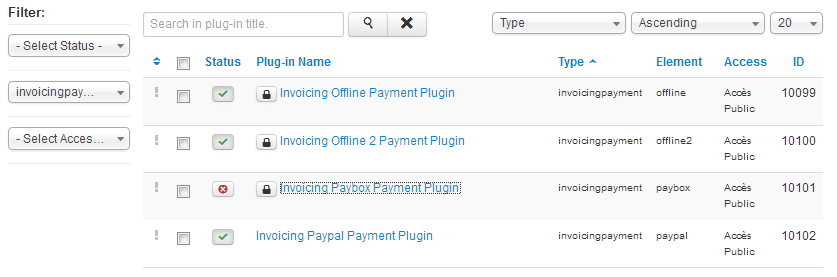

Click on the "Payment Processors" tab to see the payment systems allowed. You can see just below the default list of the payment systems right after the installation :
Invoicing Offline Payment Plugin et Invoicing Offline 2 Payment Plugin corresponds to two differents way of payment system, cheque or CB for example. The two others plugins corresponds to PayPal and PayBox. To beneficiate from a payment system, be sure that the status is on "Enabled" and than you correctly filled the data you have been supplied into the Detail Options, the "Merchant ID" for Paypal, by example.
Don't forget to modify the description text that will be showed to the users.